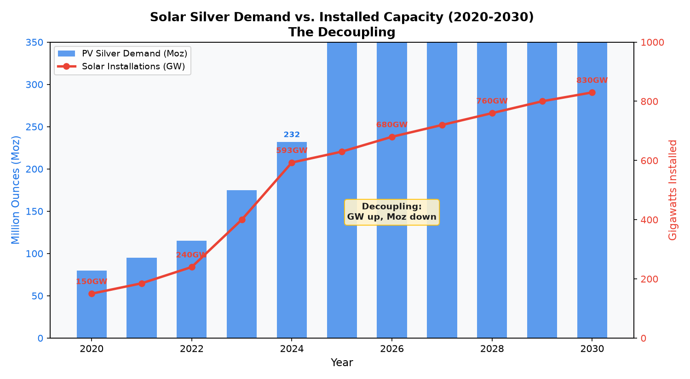
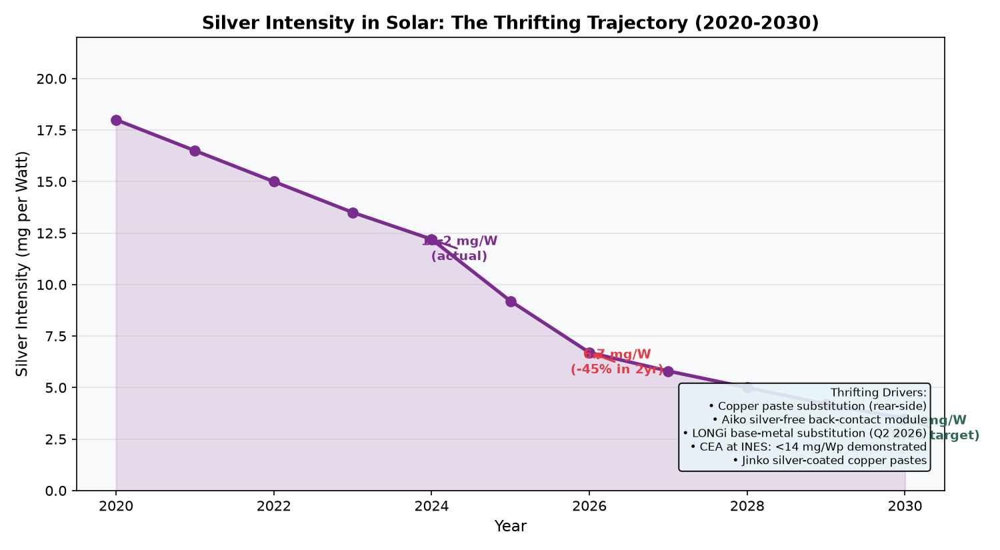
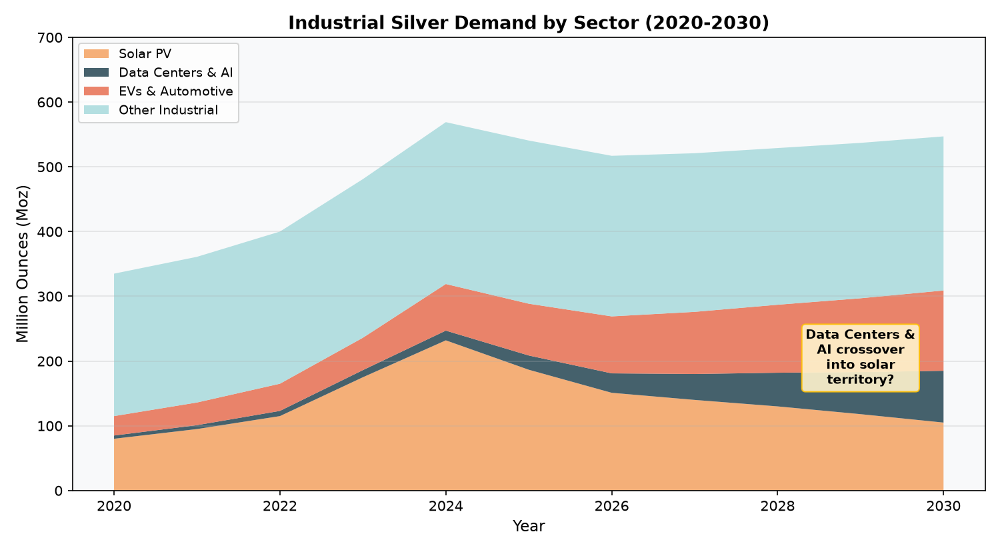
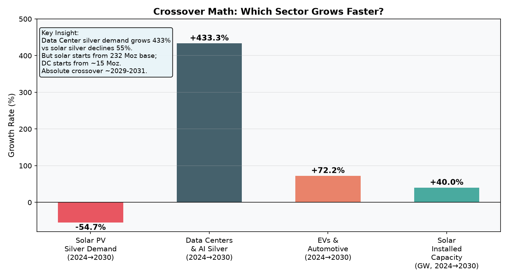
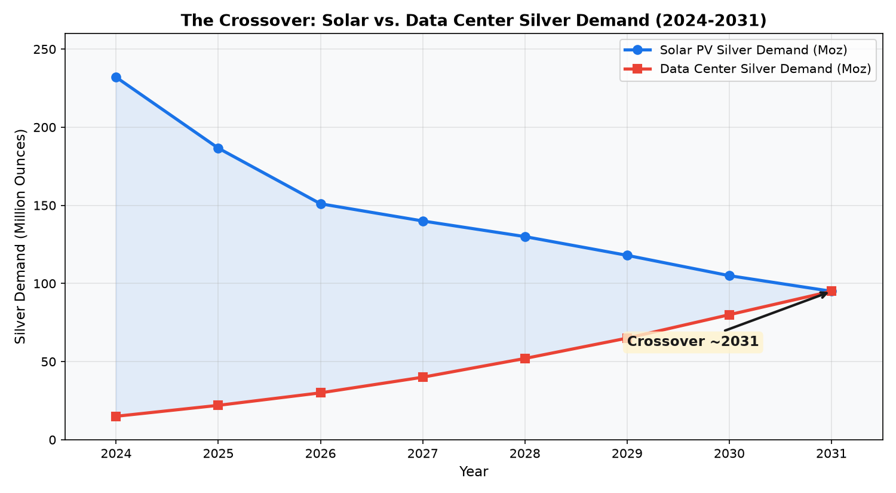
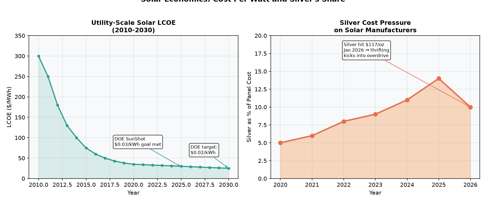
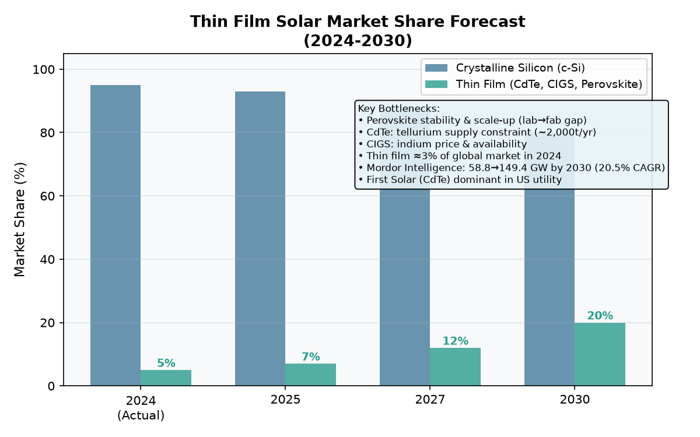
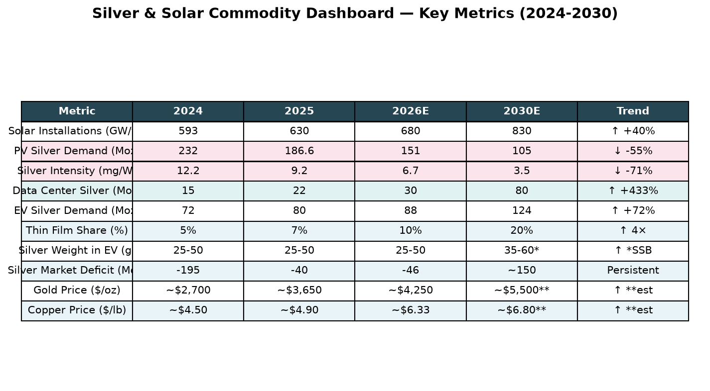

How the AI infrastructure buildout, solar thrifting, and changing commodity intensities reshape the investment landscape for silver, copper, gold, and specialty chemicals.
Solar installations continue to grow at a breathtaking pace — 593 GW added in 2024, on track for 800+ GW annually by 2030. But the amount of silver consumed per watt is falling even faster. The result: a structural decoupling between solar capacity expansion and silver demand.

The amount of silver needed to produce each watt of solar capacity has fallen from ~18 mg/W in 2020 to ~12.2 mg/W in 2024. The World Silver Survey 2026 estimates it will reach ~6.7 mg/W in 2026 — a 45% reduction in just two years. The CEA at INES has demonstrated sub-14 mg/Wp at module level, with a target of 3 mg/Wp by 2030.

Solar's share of industrial silver demand is declining in absolute terms, but data centers & AI are growing fast from a small base. EVs and automotive continue their steady climb as EV penetration doubles silver content per vehicle.

The growth rates tell the story in a different way. Data center silver demand is projected to grow 433% from 2024 to 2030. EV demand grows 72%. Solar demand contracts by 55%. But the base matters — 55% of 232 Moz is a much larger number than 433% of 15 Moz.

The most important chart in the analysis. Solar silver demand is falling from 232 Moz. Data center silver demand is rising from 15 Moz. The crossover — where data centers consume more silver than solar — happens around 2029-2031 in the baseline scenario.

Utility-scale solar LCOE has fallen from ~$300/MWh in 2010 to ~$30/MWh today — a 90% reduction. The DOE's SunShot target of $0.03/kWh was met by 2025. Silver's share of panel cost spiked to ~14% during the January 2026 peak at $117/oz, but has since moderated as silver corrected to $65-75/oz. This cost pressure is the direct cause of the thrifting acceleration.

Thin film technologies (CdTe, CIGS, Perovskite) use little to no silver — CdTe uses zero. But thin film was only ~5% of global solar production in 2024. First Solar (CdTe) dominates the US utility market with ~30% share there, but globally c-Si reigns. Perovskite's lab→fab gap remains the bottleneck: record efficiencies of 26.7% in lab vs. ~16% in modules at scale, with stability issues unresolved. Tellurium supply (~2,000 tonnes/year globally) is a hard ceiling on CdTe scale-up. Mordor Intelligence projects thin film reaching ~20% share by 2030, but from a tiny base.


Using Silver Institute / Metals Focus data plus Oxford Economics projections:
| Year | Solar Silver (Moz) | DC+AI Silver (Moz) | Gap (Moz) | Solar mg/W | DC Capacity (GW) |
|---|---|---|---|---|---|
| 2024 | 232 | 15 | 217 | 12.2 | ~50 |
| 2025 | 187 | 22 | 165 | 9.2 | ~55 |
| 2026 | 151 | 30 | 121 | 6.7 | ~62 |
| 2027 | 140 | 40 | 100 | 5.8 | ~75 |
| 2028 | 130 | 52 | 78 | 5.0 | ~90 |
| 2029 | 118 | 65 | 53 | 4.2 | ~115 |
| 2030 | 105 | 80 | 25 | 3.5 | ~145 |
| 2031 | 95 | 95 | 0 (CROSSOVER) | 3.0 | ~180 |
• US data center power doubles to 66 GW by 2027 (Goldman Sachs base case) — not yet fully priced into silver demand models
• Nvidia's 800V architecture reduces copper, but increases high-performance connector demand where silver is irreplaceable
• Each hyperscale AI data center (~1 GW) uses roughly 40-60% more silver per rack than traditional facilities
• The $500B Stargate project and hyperscaler $736B combined capex in 2025-2026 materializes on schedule
• Aiko's silver-free back-contact module scales successfully and is adopted by other manufacturers
• Copper substitution proves reliable in field conditions (currently "extremely limited" industry knowledge per Kiwa PVEL)
• Data center buildout is "lumpy and delayed" — grid connection wait times averaging 4 years in the US
• A material portion of announced AI capacity proves to be "bragawatts" (per Oxford Smith School / Marex Group)
• Silver prices stay elevated ($75-100/oz), accelerating thrifting further than current forecasts
The data center silver demand story is less visible than solar, which makes it both interesting and uncertain. Here is what is known:
| Component | Silver Content | Notes |
|---|---|---|
| GPU accelerator (TIM) | 8-12g | Thermal interface material — silver's thermal conductivity is unmatched |
| High-bandwidth memory module | 2-4g | HBM3e/HBM4 stacks use silver in interconnects |
| Networking switch port (100+ GbE) | 5-8g | High-frequency signal integrity requires silver |
| Server power delivery system | 10-15g | Circuit breakers, relays, bus bars |
| AI-optimized server (total) | 40-60% more | vs. traditional server — silver premium for performance |
| Edge computing facility | ~10,000-15,000g | 5,000+ new edge facilities by 2030 → 50-75 Moz cumulative |
Current data center silver demand estimate: ~15 Moz in 2024, growing to ~80 Moz by 2030. This is based on the Oxford Economics data center construction put-in-place forecast (showing 5× growth in construction spending from 2024 to 2035) combined with per-MW silver content estimates from the Silver Institute's "Next Generation Metal" report. Note: this is less precisely quantified than solar silver demand because data centers are not tracked as a single industry by silver surveys. The real number could be 20-50% higher or lower.
Silver in semiconductors flows through three channels: (1) wire bonding and leadframes for chip packaging, (2) internal connections in multi-chip modules and advanced packaging (especially for AI accelerators), and (3) PCB traces and connectors on server motherboards and networking equipment.
Total electronics & semiconductor silver demand was roughly ~240 Moz in 2024 (including all sub-sectors). The portion directly attributable to AI chips specifically is small but growing fast — the Oxford Economics report highlights that AI hardware (GPUs, TPUs, NPUs) uses silver in "internal connections and packaging" at a higher density than conventional logic chips.
The chemical connection: The semiconductor chemicals market ($16.2B in 2025, growing to $29.3B by 2030 at 12.6% CAGR) and specialty gases market ($11.7B → $22.5B by 2034) are directly leveraged to the same fab buildout that drives semiconductor silver demand. Linde, Air Liquide, and Air Products are the key industrial gas names. Unlike silver itself (where price drives demand destruction), these chemical companies have pricing power and long-term take-or-pay contracts.
• Tellurium supply ceiling: Global tellurium production ~500-600 tonnes/year. CdTe modules need ~1-2g Te per 100W panel. At current supply, max ~25-30 GW/year of CdTe production (First Solar's 2024 capacity: ~16 GW). Expanding Te supply requires expanding copper mining (Te is a byproduct of copper refining).
• First Solar dominates (~30% US utility market) but is capital-intensive to scale.
• Lab→Fab gap: Record 26.7% efficiency in lab vs. ~16% in production-scale modules. Stability: perovskite cells degrade faster than c-Si, especially under heat and humidity. Commercial lifetimes of 5-10 years vs. 25+ for c-Si.
• Lead content in best-performing formulations raises regulatory concerns.
• Tandem (perovskite-on-silicon) is the more likely near-term path — and those still use silver on the silicon bottom cell.
• Complex manufacturing process with multiple vacuum deposition steps.
• Indium availability: ~1,000 tonnes/year globally. CIGS uses ~10-20g/m² of indium.
• Limited production scale outside of a few players (Solar Frontier, Avancis, Miasolé).
• Module efficiency ~15-17%, below mainstream c-Si (21-24%).
• Perovskite-silicon tandems could be the bridge — combining high efficiency with c-Si's existing manufacturing base. Oxford PV already has pilot production. If these scale, they reduce silver per watt vs. pure c-Si but don't eliminate it.
• First Solar's CdTe expansion to ~25 GW by 2027 is the biggest single thin-film catalyst.
• Bottom line: Thin film disrupting silver demand before 2030 is unlikely. Even at 20% market share, c-Si remains the 80% majority user of silver paste.
Silver is in a tug-of-war between its largest source of industrial demand (solar, declining) and its fastest-growing source (AI infrastructure, accelerating). The net effect through 2029 is likely flat to slightly declining total industrial demand before data centers and EVs fully offset solar's reduction. This creates a ceiling on silver's upside relative to gold — which is why the gold/silver ratio has widened from ~30:1 in early 2025 to ~60:1 currently. For silver to reclaim its highs above $100/oz, you need either: (a) gold to keep rallying and pull silver along, or (b) data center buildout to dramatically exceed expectations, pulling the crossover forward to 2027-2028.
Copper has no thrifting headwind (you cannot substitute silver for copper in cables — silver is too expensive). Every data center, every grid upgrade, every EV charger, every solar farm interconnection needs copper. The S&P Global study showing a need for one Escondida mine per year for 30 years is the most powerful long-run supply constraint narrative in commodities. The near-term risk (per Reuters) is "bragawatts" and overestimated AI copper intensity — but even in the low-case scenario, copper demand grows. Copper is currently at $6.33/lb, up 31% YTD, and the copper-to-gold ratio remains at multi-decade lows, historically a precursor to copper outperformance.
Gold is essentially uncorrelated to this entire analysis. Its drivers are central bank buying, de-dollarization, and fiscal dominance. Hartnett (BofA) targets $6,000/oz. Goldman targets $5,400. Your portfolio's 58% AI/mega-cap allocation is heavily exposed to growth and tech sentiment — gold would be the hedge against the macro tail risks that could puncture that thesis (recession, credit event, fiscal crisis). At current ~$4,250/oz, gold has already run but the structural bid from central banks shows no sign of abating.
Unlike metals — where price increases trigger demand destruction and substitution — semiconductor chemicals and specialty gases are process necessities with no substitutes and high switching costs. The semiconductor chemicals market is growing at 12.6% CAGR to $29.3B by 2030. Linde ($LIN), Air Liquide, and Air Products have record backlogs tied to fab construction. Entegris ($ENTG) provides the filtration and contamination control for these ultra-pure processes. If you want AI infrastructure exposure without volatility, this is the quietest, highest-quality channel. Less exciting than silver, but also less likely to be disrupted.
Data sources: Silver Institute World Silver Survey 2025 & 2026 (Metals Focus), Silver Institute / Oxford Economics "Silver: The Next Generation Metal" (Dec 2025), S&P Global "Copper in the Age of AI" (Jan 2026), IEA Solar PV Outlook 2025, Goldman Sachs Research Data Center Power Demand, Lazard LCOE+ 2025, CEA at INES 2024 PV Silver Reduction Results, ITRPV 2025, Sprott Critical Materials Report (Mar 2026), Mordor Intelligence Thin Film PV Report, Reuters "AI may not be the demand booster copper bulls expect" (Jun 2026), SolarPowerWorld "Solar panels are trying to use less silver" (Mar 2026), BloombergNEF EV Outlook 2025.
The data center silver demand figures (15 Moz in 2024 → 80 Moz in 2030) are the author's estimates synthesized from multiple sources. Unlike solar silver demand (tracked directly by Metals Focus), data center silver is not broken out as a separate line item in the World Silver Survey. The range of uncertainty is wider. PV silver demand figures are from Metals Focus / Silver Institute and are the most reliable numbers in this analysis.
Not investment advice. This is an analytical framework for understanding the intersecting dynamics of silver, solar, AI infrastructure, and commodity markets. All investment decisions should incorporate your own research and risk assessment.